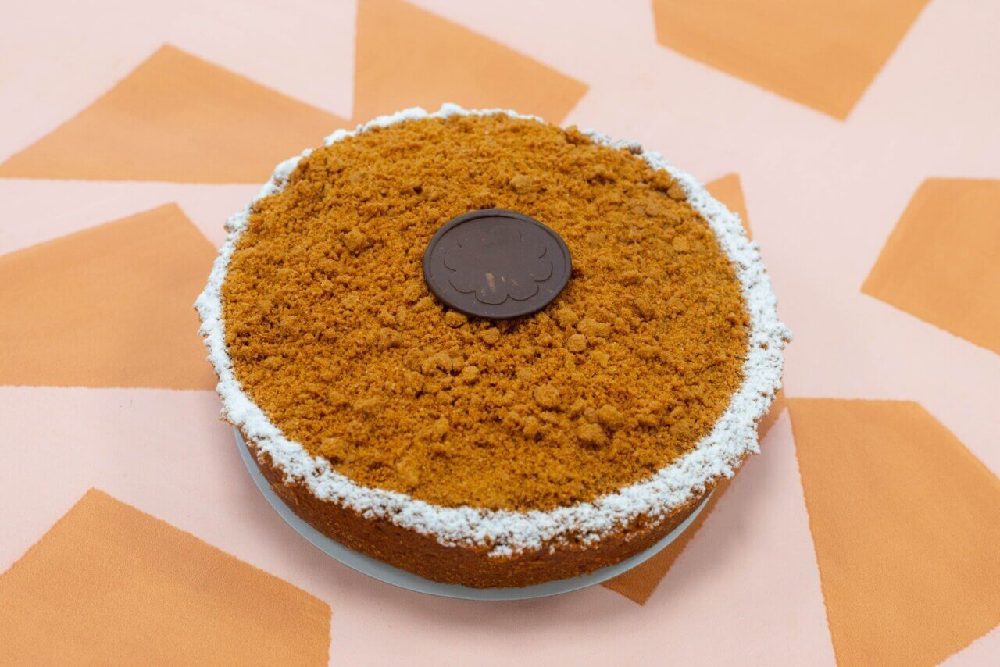
Biscoff Speculoos taart
30% geredde pompoenen, 100% feest. Barstensvol Biscoff en hij smelt in je mond. Voor 8 tot 10 personen.
€21,50
Plantaardige bakkerij in Nijmegen
Taarten en cakes van geredde groente en fruit, helemaal plantaardig. Gebakken door een team dat we zelf opleiden. Vóór 11 uur besteld, morgen in huis.
4,9 uit 190 Google-reviews
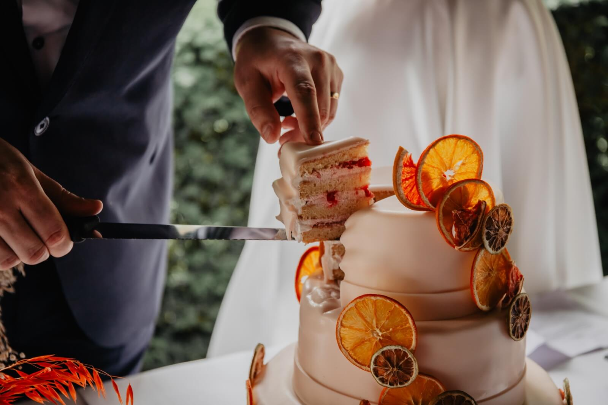
Bestel zo ver van tevoren als je zelf wilt. Bellen, mailen of via de webshop.
Herfst en Sinterklaas, maar dan plantaardig en van geredde ingrediënten.

30% geredde pompoenen, 100% feest. Barstensvol Biscoff en hij smelt in je mond. Voor 8 tot 10 personen.
€21,50
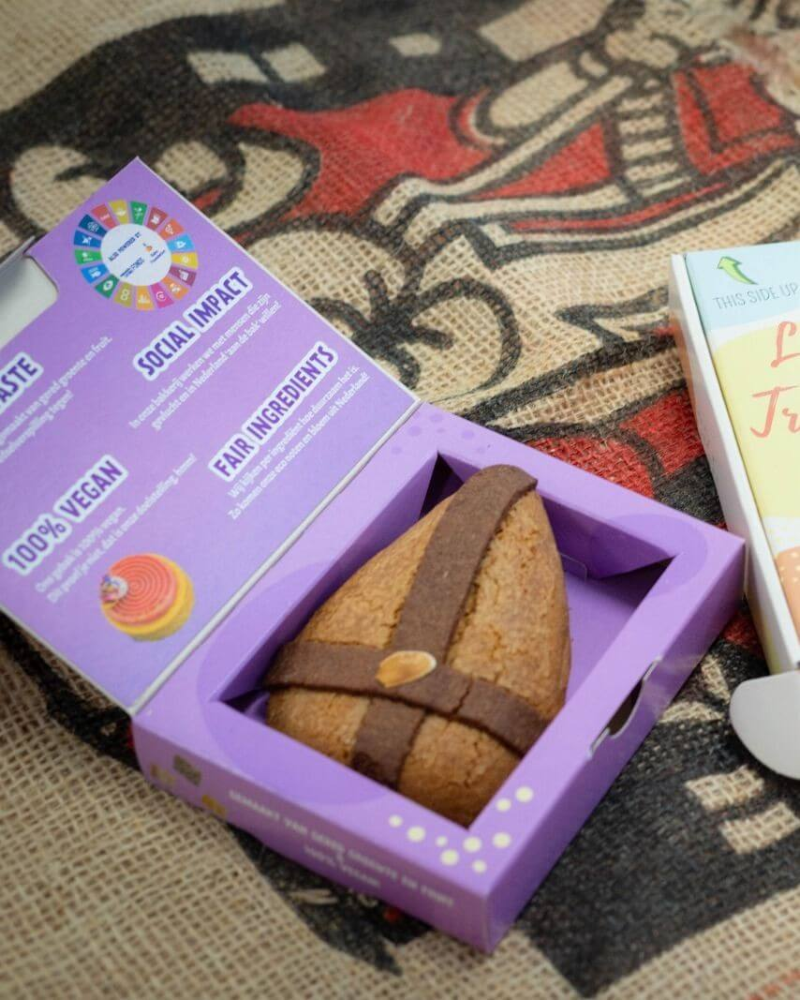
Een keer wat anders dan chocolade met Sinterklaas.
€6,99 maat S
€10,90 maat L
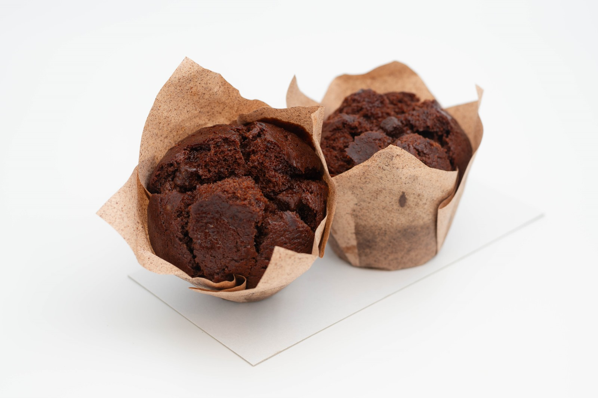
Van geredde bananen en cacao. Ook als citroen-maanzaad of wortel.
€2,40 per stuk, 5+1 gratis
"Afgelopen week voor het eerst hier taart en cakejes gehaald omdat ik zo nieuwsgierig was geworden na alle positieve verhalen. Kan het dan écht lekker en duurzaam en plantaardig tegelijk zijn? Het antwoord is volmondig JA!!! Ooh wat hebben we genoten van alle lekkernijen, ook al mijn niet vegan vrienden en collega's heb…"
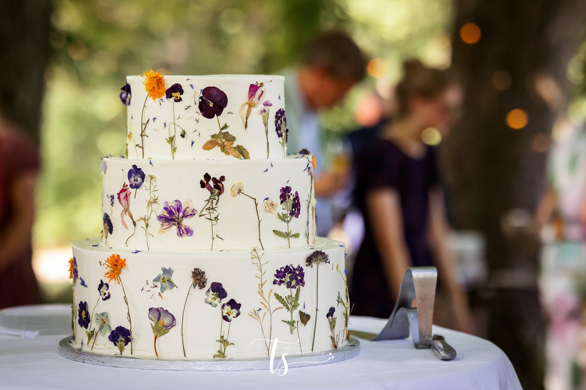
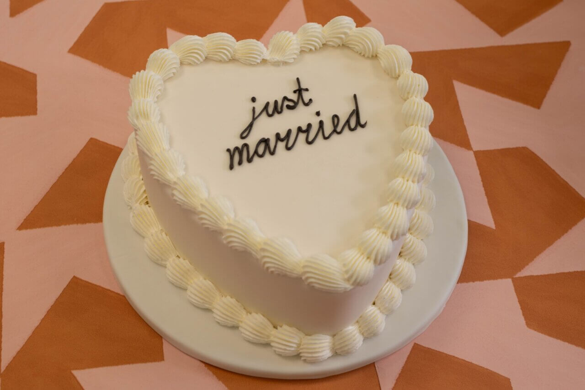
We maken jullie bruidstaart helemaal op maat: in elke vorm, elke smaak en zo groot als jullie feest. Naked cake met frambozen, drie lagen met gedroogde bloemen of een complete sweet table.
Duurzaam en plantaardig, maar dat proeft niemand. Wel dat het lekker is. We gaan graag voor jullie aan de bak in onze bakkerij in Nijmegen.
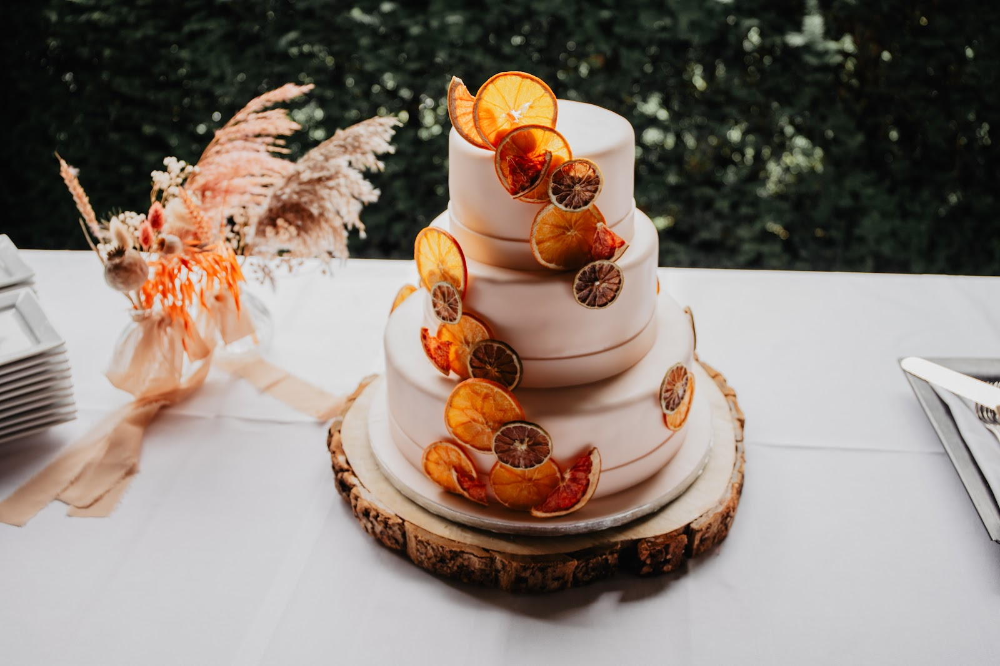
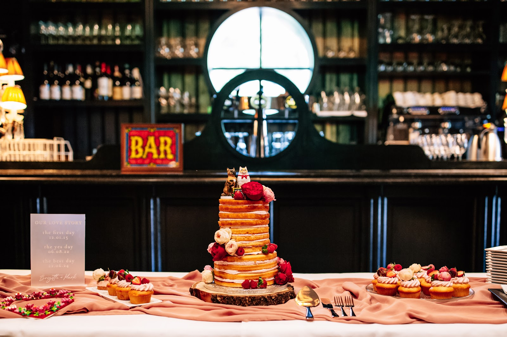
"Toen wij besloten om te trouwen wist ik het meteen: ik wilde heel graag dat Trashure taarten de bruidstaart en sweet table zou verzorgen op onze bruiloft. Duurzaam, vegan, van geredde ingrediënten en met een mooie sociale missie. En het was zo ontzettend lekker! Van tevoren hebben we heel fijn contact gehad met Jeanne,…"
"WAUW! Trash’ure taarten heeft voor onze bruiloft een fantastisch mooie sweet table gemaakt voor onze bruiloft! Wij eten zelf plantaardig, dus wilde onze gasten meegeven hoe lekker deze taarten ook kunnen zijn, ons doel is bereikt door jullie. Iedereen vond het HEERLIJK!!…"
"Trash'ure taarten heeft afgelopen mei de vegan taarten verzorgd op onze bruiloft. Vantevoren hadden we contact over onze wensen en het was voor ons dus een verrassing hoe het er precies uit zou komen te zien, maar wat een plaatje! Alle taarten bij elkaar waren een super leuk kleurrijk geheel…"
"Trash'ure heeft voor ons een superlekkere bruidstaart gemaakt. Ze zijn erg flexibel in formaten/stijlen/smaken etc. We hebben uiteindelijk voor een naked cake gekozen met frambozenvulling, daarnaast hadden we nog een paar cupcakes. We hebben van meerdere gasten complimenten gekregen over de lekkernijen!"
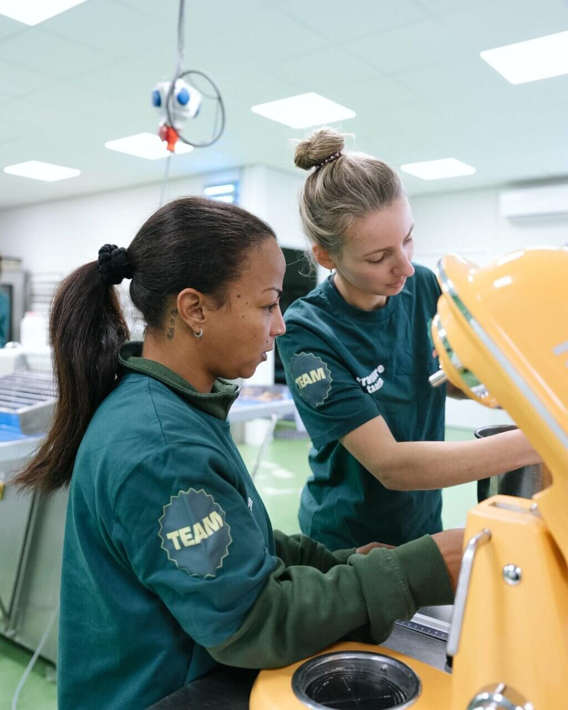
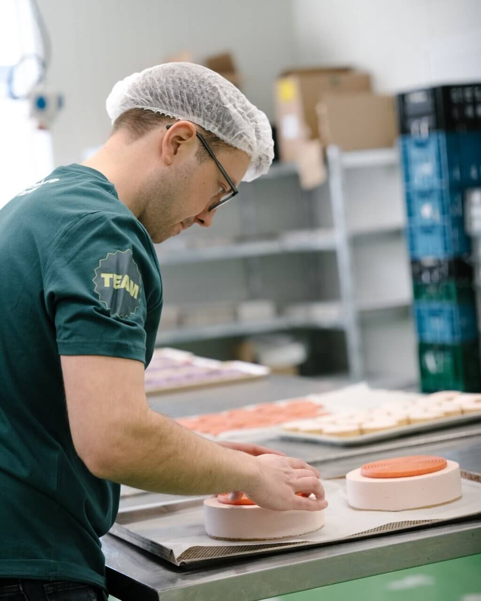
Lekker is het begin. Wat ons betreft mag een taart ook de wereld een stukje beter maken. Daar letten we op bij alles wat we bakken.
We redden groente en fruit van verspilling. Pompoen, wortel, zoete aardappel, peer, sinaasappel: wat anders weggegooid zou worden, gaat bij ons de taart in. Daarnaast bakken we met lokale, ecologische noten en granen.
In onze bakkerij leiden we vluchtelingen op tot vakmensen. Zo bouwen ze aan een eigen inkomen en komen ze uit de uitkering. Ons team is multicultureel en leert elke dag van elkaar.
We staan voor een wereld zonder dierenleed. Daarom is onze patisserie volledig plantaardig, en van de hoogste kwaliteit. Zonder ei en zonder melk, wel vol smaak.
We zoeken versterking: een banketbakker, een teamleider bakker en productiemedewerkers die ook nieuwe Nederlanders begeleiden op de werkvloer.
Stuur ons een berichtjeVoor klanten, collega's of op de kaart van je zaak. Vertel ons je idee, dan denken we mee en sturen we een offerte.
Vraag een offerte aanEen klant bedanken voor de fijne samenwerking of je merk feestelijk neerzetten? Kies een lekkere logotaart of gebakjes met jouw logo.
Verras je personeel of relaties met een persoonlijk cadeau, zoals een gevulde speculaasmijter. We denken graag mee over iets origineels.
Trash'ure Taarten bij jou op de kaart? Onze yellow velvet staat al bij horeca door heel Nederland. Vraag naar de mogelijkheden en geef je kaart een verhaal.
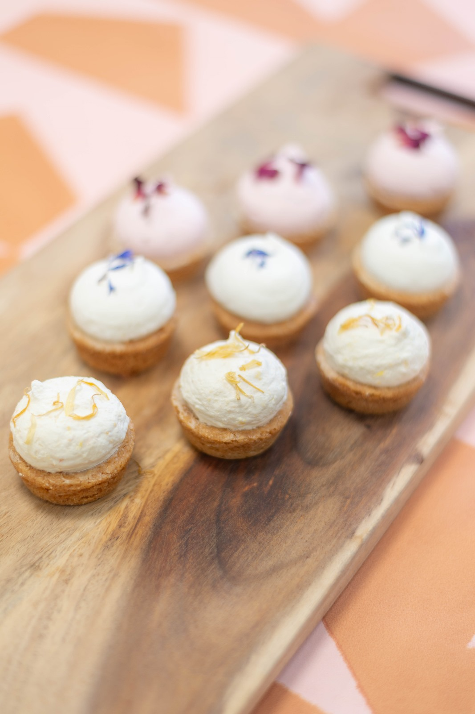
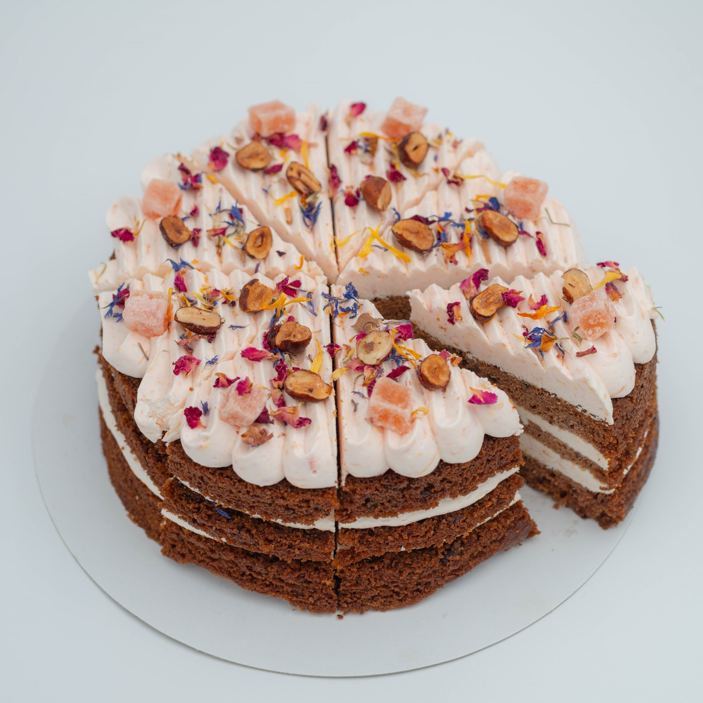
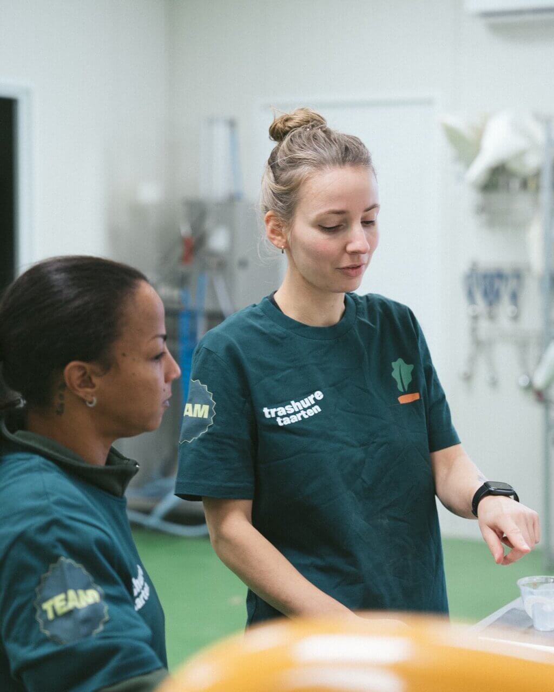
| Maandag | Gesloten |
| Dinsdag | 09:00 - 16:30 |
| Woensdag | 09:00 - 16:30 |
| Donderdag | 09:00 - 16:30 |
| Vrijdag | 09:00 - 16:30 |
| Zaterdag | 09:00 - 11:30 |
| Zondag | Gesloten |
Bezorging dinsdag t/m zaterdag tussen 9.00 en 11.30 uur.